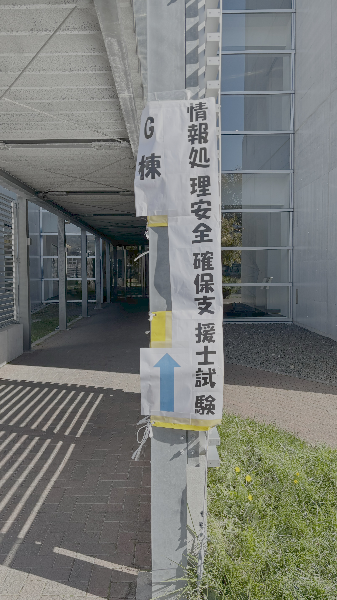
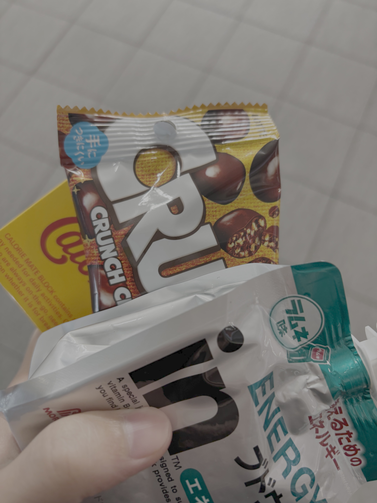
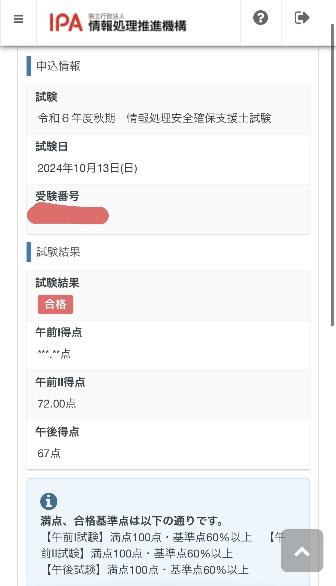

2024年10月13日(日)に情報処理安全確保支援士試験を受験してきましたー！
受けようと思った理由
2024年の春に応用情報を受けて合格したのが嬉しかったので、情報処理安全確保支援士試験も受けてみようと思ったのがきっかけ
受験までの準備
やったこと
- 情報処理安全確保支援士過去問道場
- 情報処理教科書 情報処理安全確保支援士 2024年版
- 2024 情報処理安全確保支援士「専門知識＋午後問題」の重点対策
- うかる！情報処理安全確保支援士 午後問題集[第2版]
勉強方法
2か月前くらいから
過去問道場を暇な時間にぽちぽち
1か月半前くらいから
重点対策本で過去問を解き始めました。本で問題を見ながら、iPadに解答を書いていく感じです。
大問1つを解くのになれるまでは1時間以上かかるので、1日に1~2問を解けたらすごい
午後問題は問題を読むだけでもしんどくて、家に帰ったら勉強の意思が折れることが分かりきっていたので、仕事終わりに空いているカフェに直行して21-22時くらいまで勉強してから家に帰る生活を続けました(眠すぎて寝てるだけの時も…)
途中で発見したおすすめの勉強法↓
なぜ今までダウンロードできる解答用紙のPDFをiPadに読み込むという発想がなかったのか！！
— まろぴよ🐤@個人開発インコ (@maropiyooo) September 23, 2024
白紙ページに解答欄を自作していた時間が消えたね！！ pic.twitter.com/2cTlKgtIzS
2週間前くらいから
最後の足掻きとして、村山先生の速効サプリ®を購入し、お昼休憩の時間に読み始めました。
試験前日
試験前日は、解いたことのない過去問を時間を測って少し解いてみたのですが思った以上に解けなくて焦りました。 これ以上やると自信がなくなりそうだったので、速効サプリを読んだり、まとめのチェックシートを見るだけの軽めの勉強に切り替えてねますた
試験当日
起床試験
午前I免除ということもあり余裕をもって合格
会場到着試験
午前Ⅱ試験開始時間の45分前くらいに到着し合格
午前Ⅱ試験
初見の単語が多くて難しかったです 過去問道場で無双できても、やはり本番道場は一筋縄ではいかないので、油断大敵ですね
昼帰らない試験
午前試験が終わったら、1時間ほど昼休憩があるので、試験会場に行く途中のコンビニで買った昼飯(ブースト飯)を食べました
お昼を食べた後は、外に出て少し散歩し、リフレッシュしてから教室に戻りました。
午後試験
最初に問2を選び、なんとか脳みそをぶん回しながら解答欄を埋めつつ、ちょうど1時間程度で問2を解き終えました。 2問目に問4を選択したのですが、これが大きなミスでした。
15分くらい時間を使った後、頭が真っ白に…これはまずいと思ったので、残り時間を確認し ちょうど残り1時間15分(試験時間の半分)くらいのとこだったので、今ならまだ切り返せると思い、問4を途中で諦めて問1に切り替えました。
そして最終的には大問1と大問2を選択し、なんとか時間内に解答欄をすべて埋めることはできました。
途中の問題変更が運命の分かれ目であることを祈って結果を待ちます！
勉強してみて
「セキュリティちょっとわかる」と言えるようにはなれたと思います！
色々なことを学べたので、勉強してよかったです！
結果
結果は合格でした！
おわりに
最後まで読んでいただきありがとうございました！少しでも誰かの参考になれば幸いです！